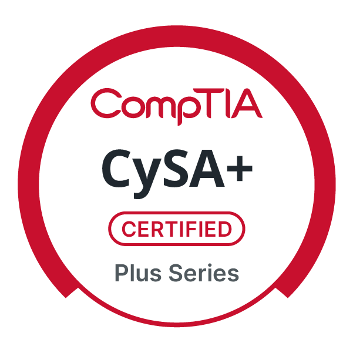
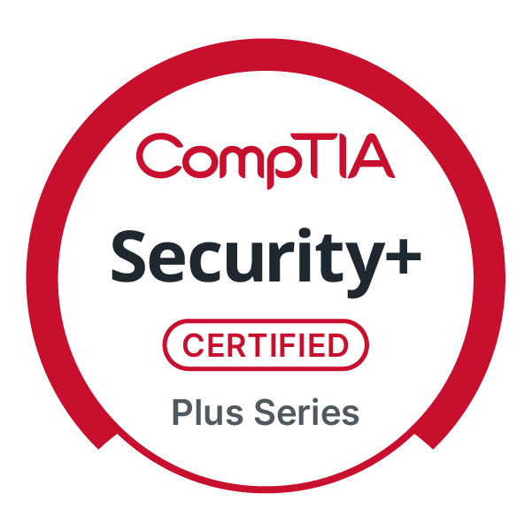
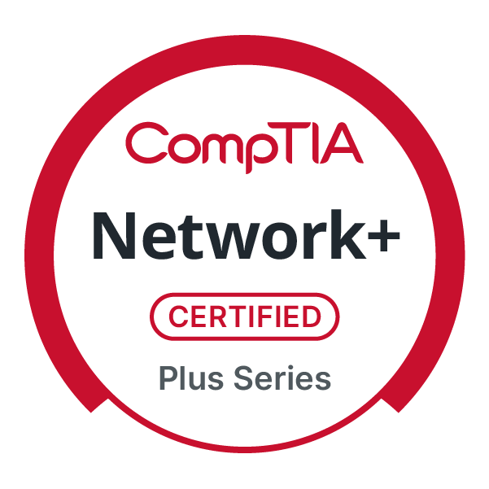
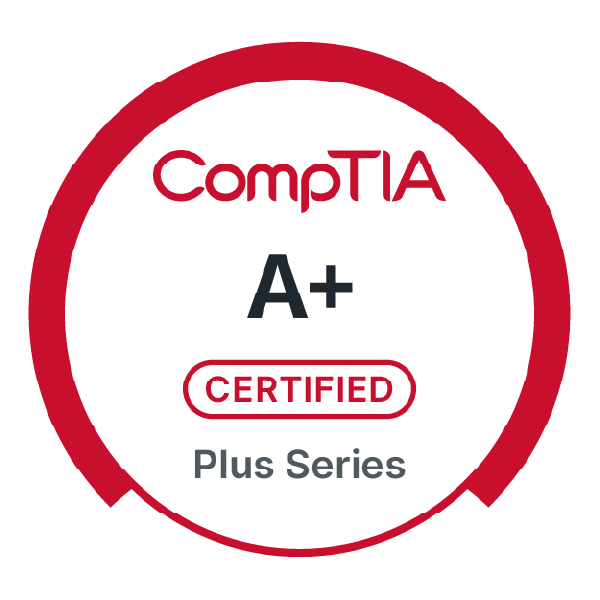
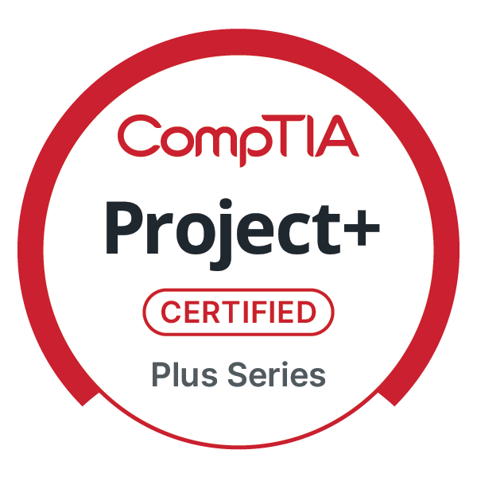

Resume
Kyle Ringler · Lubbock, Texas · email
Professional Summary
Cybersecurity and Infrastructure Specialist with 8+ years of experience in business environments. Proven expertise in network security, virtualization, and infrastructure triage, with a specialized focus on cybersecurity and information assurance. Experienced in network troubleshooting, analyzing security vulnerabilities, enforcing security baselines, and supporting regulatory compliance initiatives (e.g., HIPAA, PCI-DSS).
Experience
Security Analytics Professional
- Analyzed network and system security risks using industry-standard tools.
- Oversaw regulatory compliance (HIPAA, PCI-DSS) and ensured adherence to security standards.
- Ensured security security baselines were maintained.
Secure Infrastructure Specialist
- Apply security patches to Windows and Linux operating systems.
- Manage virtualization platforms (VMware, Proxmox) with a focus on security hardening.
- Script security tasks using PowerShell and Python.
Network Technician
- Act as primary escalation point for complex infrastructure and workstation issues.
- Design and implement routed/switched networks (MikroTik, pfSense).
- Perform Layer 1–3 troubleshooting and firewall rule validation.
- Provide training and oversight for junior staff.
IT Helpdesk Technician
- Provided Tier 1 and Tier 2 support for Windows workstations, laptops, printers, and peripherals.
- Identified and remediated system security vulnerabilities.
- Supported Windows OS, Microsoft Office, and local line-of-business applications.
- Assisted with server, network, and documentation improvements.
Technician
- Performed workstation deployment, hardware replacement, and break/fix support.
- Installed structured cabling and network equipment.
- Assisted with workstation imaging, OS installs, and software configuration.
- Built foundational experience supporting users, systems, and infrastructure.
Education
Western Governors University
B.S. Cybersecurity and Information Assurance
Texas State Technical College
A.A.S. Cyber Security
A.A.S. Computer Networking and Systems Administration
Certifications

CompTIA CySA+ Feb 2026
CompTIA Security+ Apr 2023
CompTIA Network+ Jun 2023
CompTIA A+ Jan 2023
CompTIA Project+ Jan 2026
LPI Linux Essentials
Mar 2026
Verify my certifications @ Credly
Technical Skills
- Compliance & Governance: HIPAA, PCI-DSS
- Cybersecurity: Breach Simulation, Vulnerability Assessment, Zero-Trust Architecture, Firewall Management
- Scripting & Automation: Python (Paramiko), PowerShell
- Networking & Security: MikroTik, pfSense, OPNsense, SonicWall, Ubiquiti UniFi, VLAN Segmentation
- Virtualization & Servers: VMware ESXi, Proxmox VE, Windows Server Hyper-V, Linux (CLI/Hardening)
- Containerization: Docker, Kubernetes (k3s)
- Artificial Intelligence: Claude API Integration, Prompt Engineering, Agent Skills (Claude Code), MCP Server Development (Model Context Protocol)